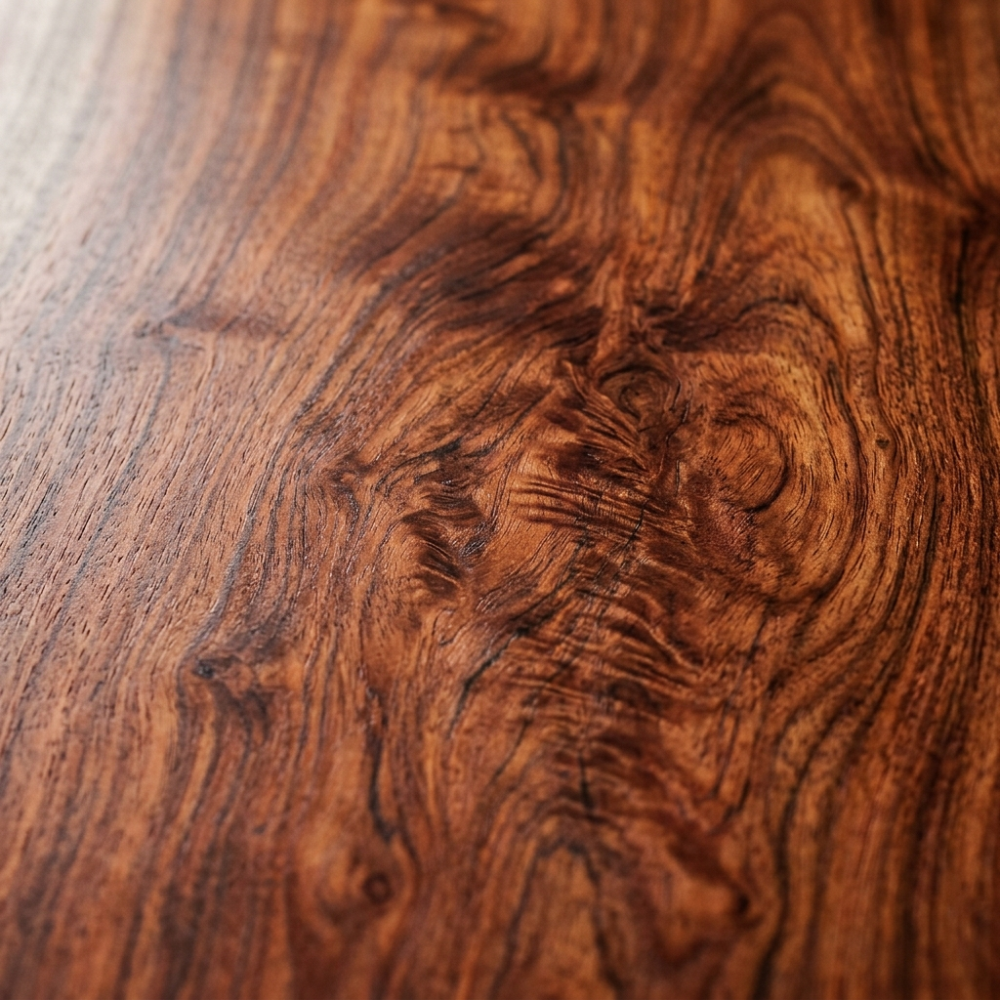
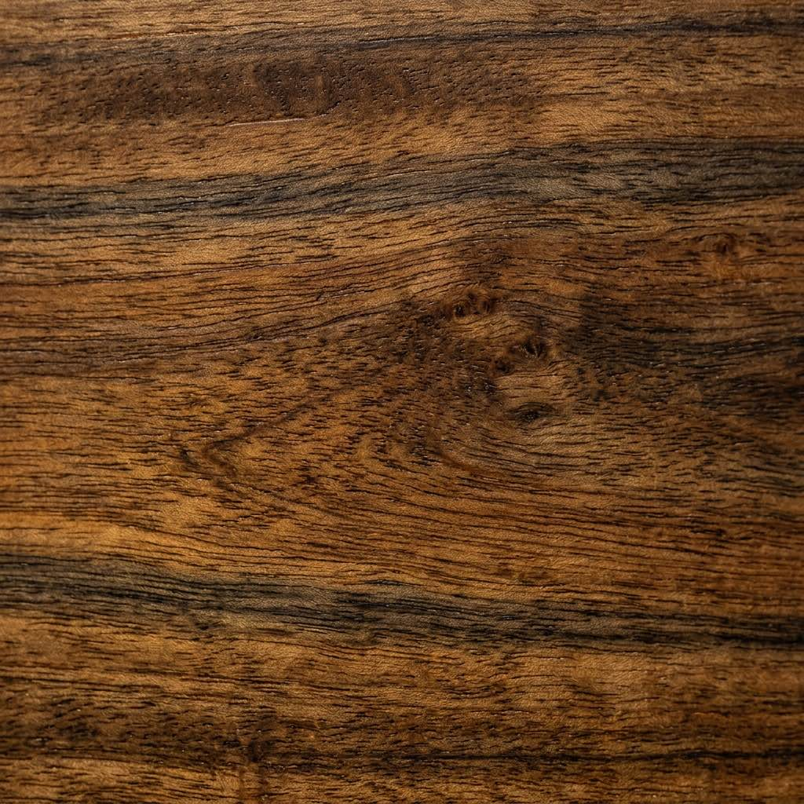

A lifetime of teaching,
and a love of all things wood.
Fig. 01 · David Bywater, with plane
David spent a working life as an Industrial Arts teacher. The bench was always there: after school, on weekends, between marking and lessons. In retirement the bench has his full attention.
The work is not just about making, but about the joy of the how and why of woodworking, and sharing that with others. At heart, David is a fundamentalist educator: he is still on a learning journey, and always will be.
Membership of the Kiama Woodcraft Group gives that learning a community: other makers, other hands, a small museum of techniques to argue over, all in good company.
David doesn't do social media. His family put this site together and pushed him onto it. To talk about a piece, the contact form is the way to reach him, or come and find him at his next exhibition in Kiama.
"The shape, the colour, the grain: all of it can dictate the final outcome. Although timber is a renewable resource, each piece is unique and cannot be replicated. It is my responsibility to use it wisely."On materials
A working life, in brief
Early years
A childhood in workshops
A father who fixed things; the smell of the workshop before the smell of school.
A career
Industrial Arts Education
A lifetime in front of classes, teaching the hand to follow the eye, and the eye to listen to the wood.
Alongside
The bench at home
Furniture, toys, boxes, clocks: made after hours, gifted to family and friends.
Now
At the bench full time
Retired from teaching, devoted to making. A backlog of commissions; a longer one of ideas.
Together
Kiama Woodcraft Group
A community of makers. Friendship and joy through the sharing of knowledge and techniques.
What the work is made of
A handful of timbers, mostly Australian.
A piece not only begins with the drawing, but also with the timber selection. The shape, the colour, the grain can all dictate the final outcome.

Australian Red Cedar
Toona ciliata

Spotted Gum
Corymbia maculata
Tas. Blackwood
Acacia melanoxylon
Sheoak
Allocasuarina
Cherry
Prunus
Walnut
Juglans